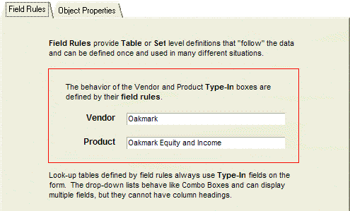
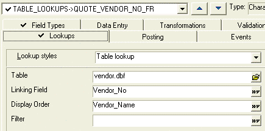
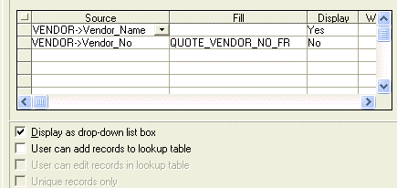
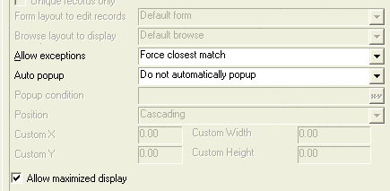
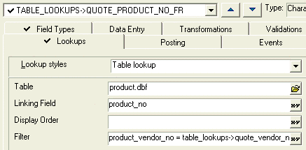
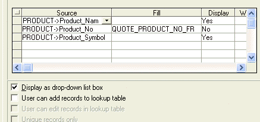

Using Field Rules for Table Lookups
Control Behavior and Appearance
The value of using field rules to populate a list is that the rules are associated with the data, and consequently, the rules automatically influence the way a form or browse displays the data.
The following screen shot shows the Table Lookup Form with Type-In controls which display lists based on the Vendor and Product fields. These controls provide two operating modes:
Popup window with list
Combo box-like drop-down list

 Note : The List and
Combo box controls are not available for use with field rules.
Note : The List and
Combo box controls are not available for use with field rules.
Defining the Vendor Lookup
The Lookups tab of the Field Rules dialog box shows how you configure the Vendor form field to produce a list of Vendor_Name field values, while storing the corresponding Vendor_No value into the Quote_Vendor_No_FR field.

The Table field defines the source of the list data.
Procedure
Return to the Control Panel and click the Table/Sets tab.
Select the table icon and right click.
Click the Edit Field Rules ... selection.
Select the "Quote_Vendor_No_FR" field in the drop-down list, at the top of the screen.
Click the Lookups tab.
In the Lookup styles list select "Table lookup".
In the Table list, select "vendor.dbf".
In the Linking Field, select "Vendor_No". This is the value that the Table Lookups table will store.
In the Display Order field, select "Vendor_Name". This sorts the results alphabetically on the Vendor_name field.
Skip the Filter field. This query will return all of the records in the table.

The Source fields defines the data that is retrieved from the Vendor table. The Fill field specifies that the Vendor_No field is mapped to the Quote_Vendor_No_FR field of the Table Lookups table. The Display fields define whether the vendor fields are displayed on the form.
In the first line of the Source column, select "Vendor->Vendor_Name".
In the first line of the Display column, select "Yes".
In the second line of the Source column, select "Vendor->Vendor_No".
In the second line of the Fill column, select "QUOTE_VENDOR_NO_FR".
If you wish a two column display, in the second line of the Display column, select "Yes". Otherwise, select "No".
Check Display as Drop-down list box field.
Since the user is selecting from a pre-defined list, the Allow Exceptions field selection is "Force closes match". This configuration does not use a popup window, so the Auto popup field is ignored. The Allow Maximize display field allows popup windows to maximize if the underlying form is maximized. In this context it is ignored.

Defining the Product Lookup
The Lookups tab of the Field Rules dialog box shows how to configure the Product form field to produce a list of Product_Name field values, while storing the corresponding Product_No value into the Quote_Product_No_FR field.
The Table field defines the source of the list data. The Filter field defines the relationship that must be satisfied to select a record from the Product table. The expression " product_vendor_no = table_lookups->quote_vendor_no " means that the Product_Vendor_No field equals the Quote_Vendor_No field in the Table Lookup table.
The expression table_lookups->quote_vendor_no means that you are specifying the Quote_Vendor_No in the Table Lookups table. It is important to use this fully-qualified field definition. The reason is that the lookup is based on the Product table. The fields of the Table Lookups table are foreign to it.

Procedure
Return to the Control Panel and click the Table/Sets tab.
Select the table icon and right click.
Click the Edit Field Rules ... selection.
Select the "Quote_Product_No_FR" field in the drop-down list at the top of the screen.
Click the Lookups tab.
In the Lookup styles list select "Table lookup".
In the Table list select "product.dbf".
In the Linking Field list enter "Product_No". This is the value that the Table Lookups table will store.
In the Filter field enter " Product_vendor_no = table_lookups->quote_vendor_no_fr ". This restricts the records returned to those where Product_Vendor_No equals Quote_Vendor_No_FR.
The Source fields defines the data that is retrieved from the Product table. The Fill field specifies that the Product_No field is mapped to the Quote_Product_No field of the Table Lookup table. The Display fields define whether the product fields are displayed on the form.

In the first line of the Source column, select "Product->Product_Name".
In the first line of the Display column, select "Yes".
In the second line of the Source column, select "Product->Product_No".
In the second line of the Fill column, select "Quote_Product_No". This is the data that stored in the Table Lookups table.
In the second line of the Display column, select "No".
In the third line of the Source column, select "Product->Product_Symbol".
In the third line of the Display column, select "Yes".
Check the Display as Drop-down list box check box.
Since the user is selecting from a pre-defined list, the Allow Exceptions field selection is "Force closest match". This configuration does not use a popup window, so the Auto popup field is ignored. The Allow Maximize display field allows popup windows to maximize if the underlying form is maximized. In this context it is ignored.
The Table Lookups sample database can be downloaded.
See Also
Overview of Development Approaches, Using Object Properties for Table Lookups, Using a Coded Lookup Field